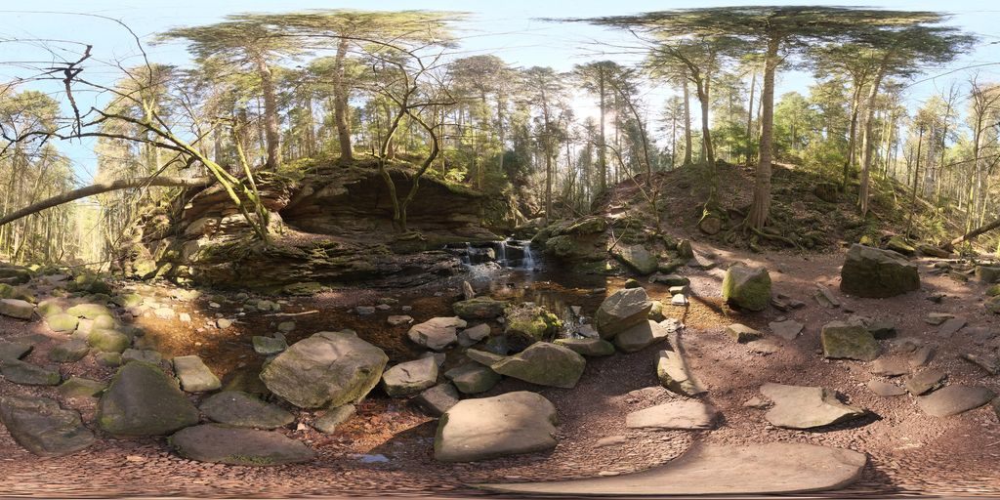

浅溪
苔岩浅溪与低跌水
林地中可见高大树木、裸露树根、落叶与覆有苔藓的岩石。；前方层状岩壁之间可见浅溪、数级小跌水和岩石间的水面。
导览文字与声音提示词
中文导览原文
你面前是一片岩石环绕的林间浅溪，中央能看到几级小跌水，水面之间散布着大小石块。左侧岩壁层理明显，部分表面覆着青苔；右侧是露出树根的土坡和小径，回头还能看见斜横的倒木。这只是图片中的景观估计，流水声将作模拟，水边是否便于通行仍不确定。
声音提示词（英文原文）
stream
A gentle connected stream flows through narrow stone channels, with rounded low gurgles beneath a soft liquid murmur. Small cascades add occasional fuller burbles that swell briefly and settle back into the continuous current. Let the texture vary slowly, leaving quiet gaps between the more distinct gurgles while the underlying flow remains smooth and modest in intensity. Keep the described water scale and rhythm: continuous irregular liquid movement, with falling water only where described; avoid rain-on-leaves ticks and a uniform broadband rain curtain.全景来源：Monbachtal Riverbank · Andreas Mischok · 摄影 CC0 · Powered by Poly Haven